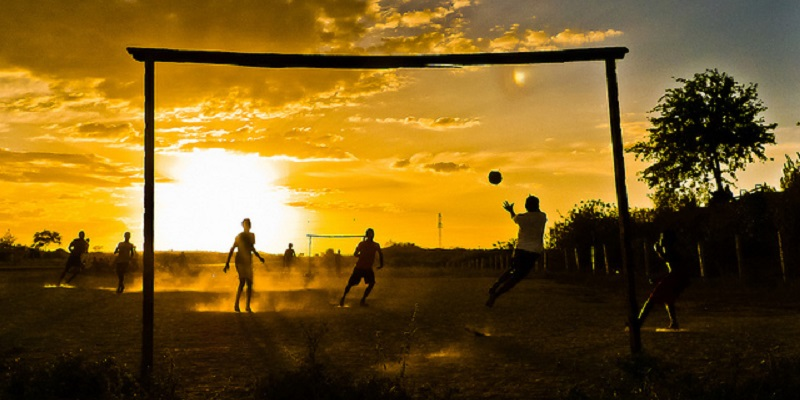

Futebol
Benefícios do Futebol
O futebol é um esporte popular que oferece uma variedade de benefícios para a saúde e o bem-estar, tais como:
- Melhora da saúde cardiovascular e da capacidade aeróbica.
- Estímulo ao trabalho em equipe e à cooperação.
- Desenvolvimento da agilidade, coordenação e habilidades motoras.
- Promoção da força muscular e resistência.
- Oportunidade de melhorar as habilidades sociais e a interação com os outros.
O futebol não apenas proporciona benefícios físicos, mas também promove valores fundamentais, como fair play, disciplina e determinação.
Como resultado, é um esporte popular em todo o mundo, oferecendo uma ampla gama de benefícios tanto físicos quanto sociais.
Tipos de Futebol
Futebol Profissional

Futebol Amador